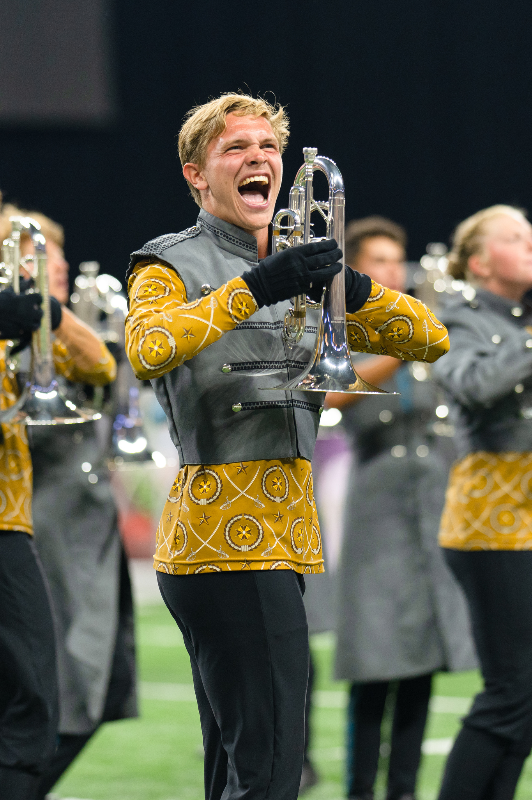
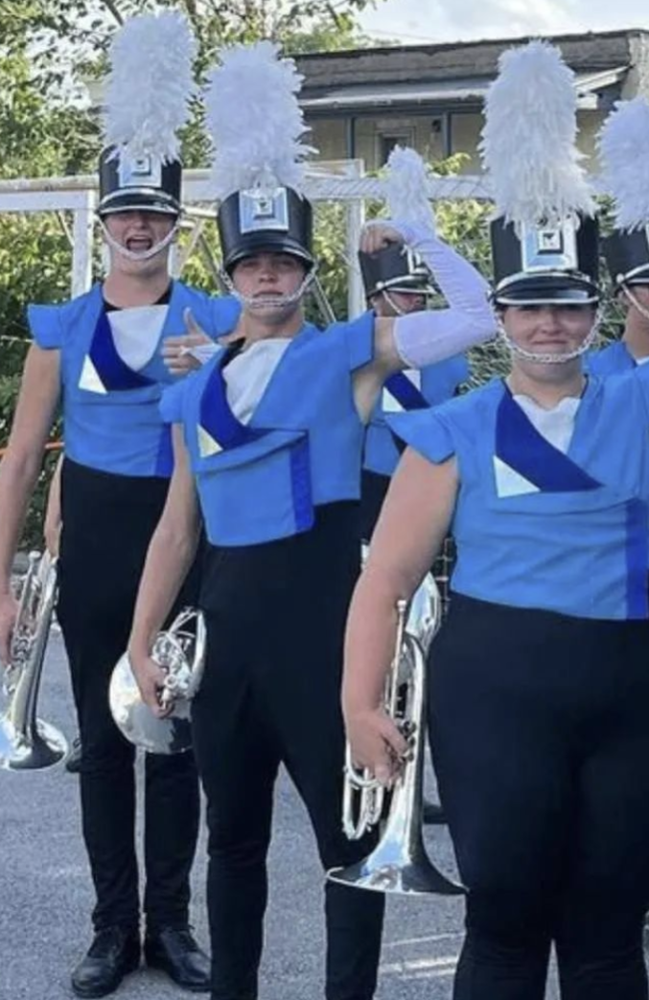
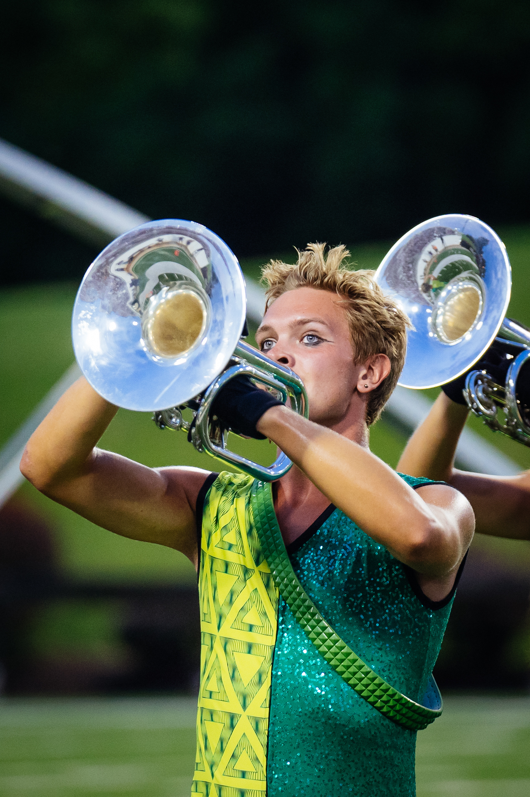
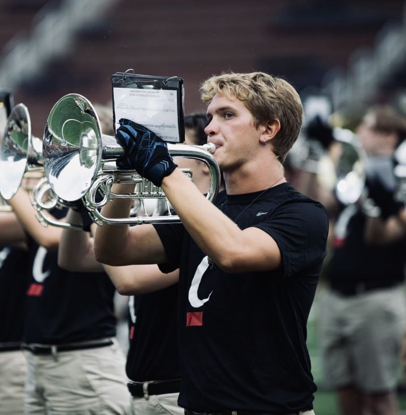
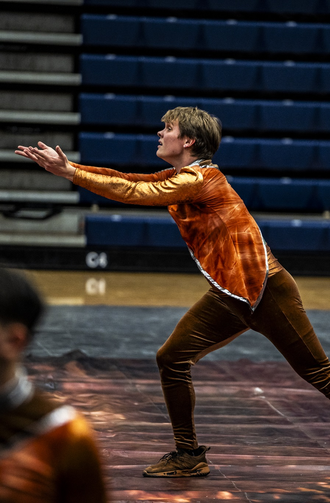
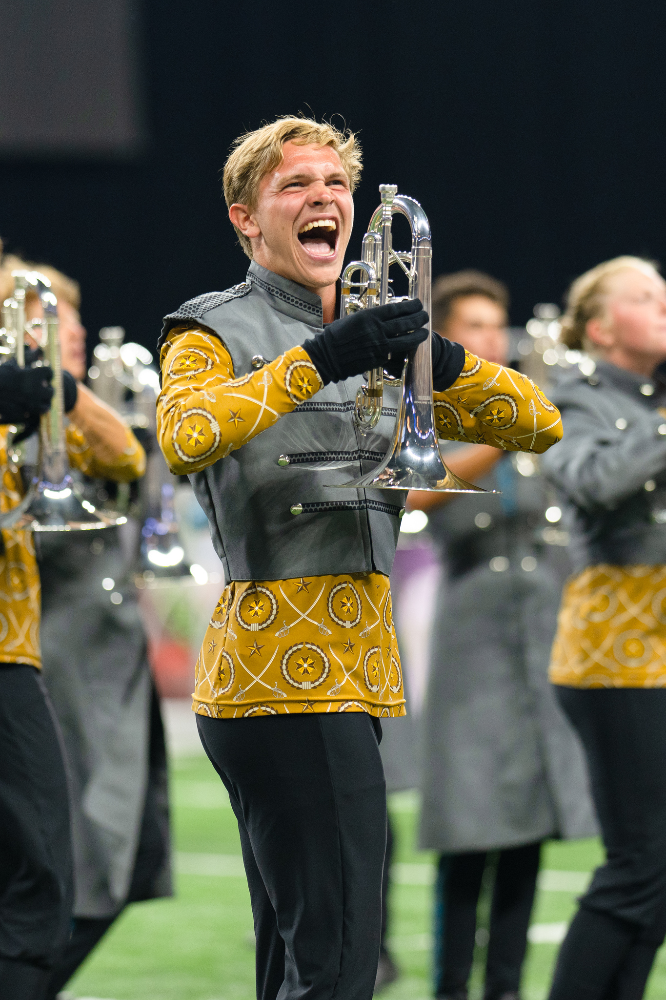
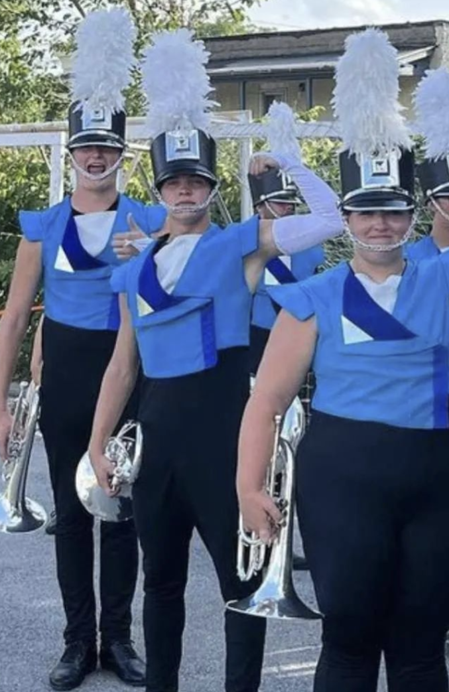
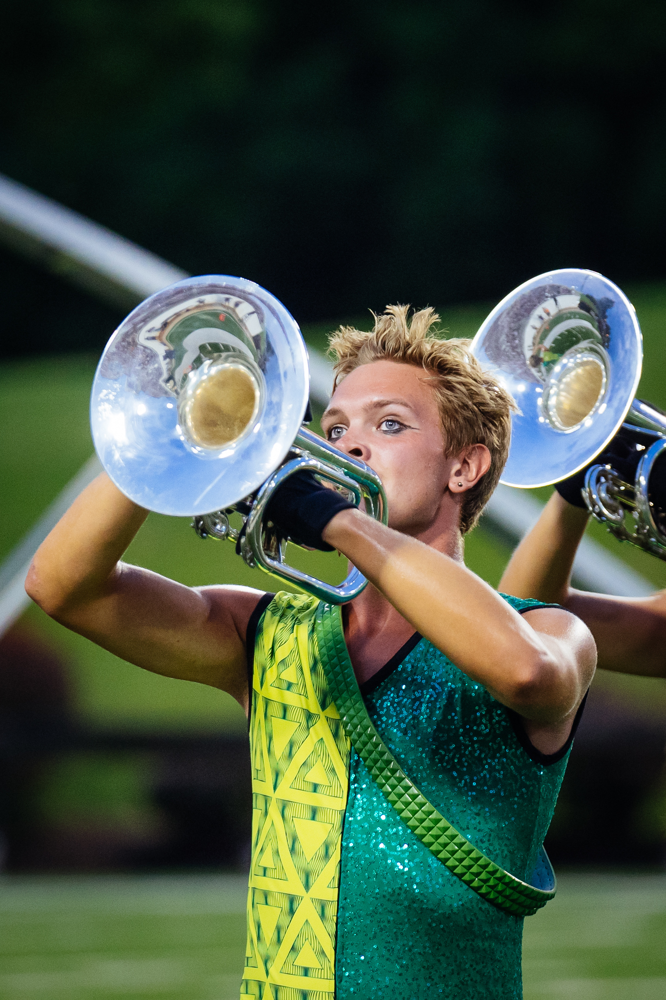
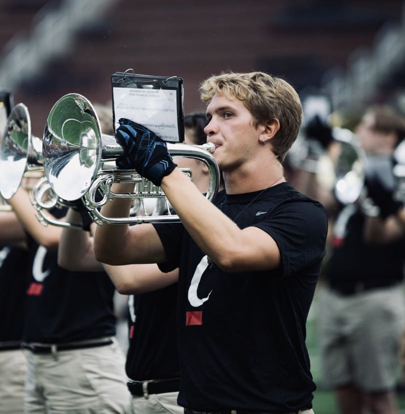
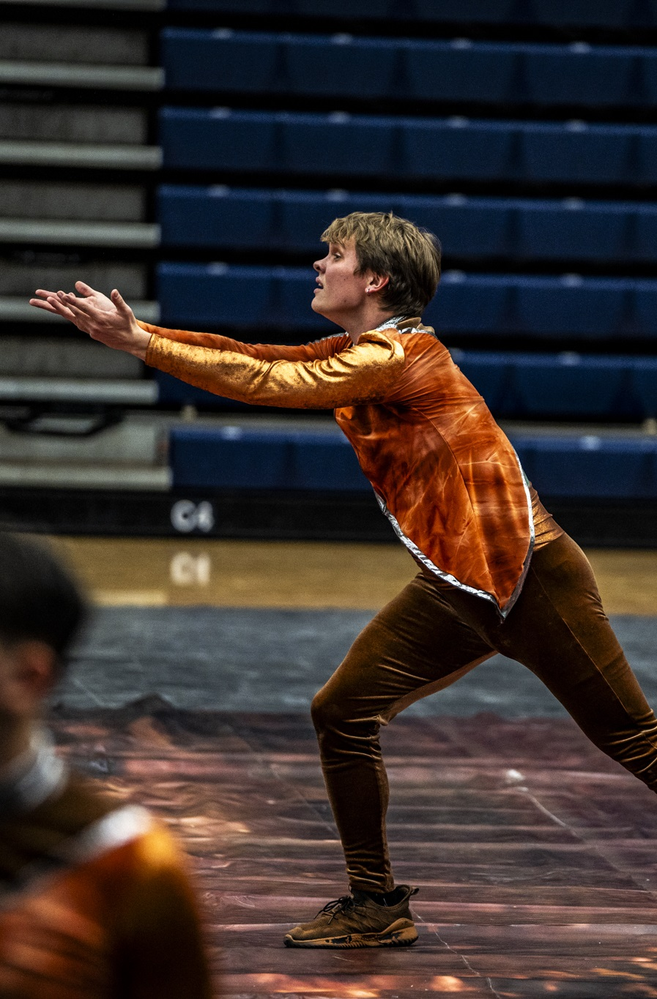

Liam Kornoely
Marching Arts Design and Education
Liam Kornoely
Marching Arts Design and Education
Marhing Arts Educaion
I worked with Cincinnati Tradition in the 2024 inaugural DCI Open-Class season with their production "Of a Stone." I was primarily a visual tech with the horn line, but I would also fill in as a brass instructor, usually working with the high brass. Because of the unique situation of the activity, I was the only field tech as the rest of the staff were also marching in the show. I worked under visual caption head Kyle Bufold. At 2024 DCI All-Age finals Cincinnati Tradition won first place in Open Class and won best visuals in Open Class.
As a visual tech for Music City's 2024 production, 'Leave it at the River,' I contributed to their DCI Semi-Finals placement of 17th. My responsibilities included refining drill and choreography, as well as providing instruction in technique, choreography, and performance for the hornline. The experience was incredibly rewarding, and I'm eager to continue my involvement with Music City in the 2025 season.

As a visual tech for the Oak Hills High School Marching Band, I primarily focused on refining visual performance and technique. Additionally, I assisted the brass section when needed and supported the caption head by contributing to choreography development and drill instruction.
As a Visual Tech at Cap City, I specialize in refining marching technique, choreography, and overall performance for both the World and Open Class groups. I work closely with the battery to ensure a cohesive visual experience, contributing to the team's success on the floor.

My Marching Experience
I began my marching career in high school at Jenison High School. I played lead trumpet and was a featured soloist in our 2019 production. I was also nominated for best marching technique in my High School.
In 2021, I was contracted to play lead trumpet at Cincinnati Tradition DCA corps.
In 2022, I was contracted to play the mellophone for the Blue Stars drum corps, where we set a new corps record in score and placement. I returned to Cincinnati Tradition in 2022 after the DCI tour had ended to fill a mellophone spot for DCA finals.
In 2023, I returned to the Blue Stars on mellophone for my age-out year. I was part of a featured visual ensemble for the 2023 production.
I spent my final season of eligibility marching at Cap City 2 indoor percussion with the visual ensemble. We broke all previous CC2 score records and placed 3rd overall in Open Class.

 









Let's Get in Contact